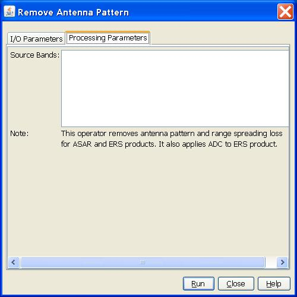

| Remove Antenna Pattern | |
This operator removes antenna pattern and range spreading loss corrections applied to the original ASAR and ERS products. For ERS product, it also removes replica pulse power correction and applies the analogue to digital converter (ADC) power less correction. This operator cannot be applied to multilooked product. Details of the functions of the operator are given below.
For ground range detected products, the following corrections are removed:
antenna pattern gain
range spreading loss
For slant range complex products, such as ASAR IMS, APS products, no antenna pattern or range spreading correction has been applied, therefore the operater is not applicable to these products.
For ground range products, the following operations are performed:
remove antenna pattern gain
remove range spreading loss
remove replica pulse power (ERS-2 only)
apply ADC correction
For slant range products, the following operations are performed:
remove replica pulse power (ERS-2 only)
apply ADC correction
For other products, such as ALOS PALSAR and RadarSAT-2 products, the operator is not applicable.
The parameter used by the operator is as follows:

Reference:
[1] Rosich B., Meadows P., Absolute calibration of ASAR Level 1 products, ESA/ESRIN, ENVI-CLVL-EOPG-TN-03-0010, Issue 1, Rev. 5, October 2004
[2] Laur H., Bally P., Meadows P., Sánchez J., Schättler B., Lopinto E. & Esteban D., ERS SAR Calibration: Derivation of σ0 in ESA ERS SAR PRI Products, ESA/ESRIN, ES-TN-RS-PM-HL09, Issue 2, Rev. 5f, November 2004